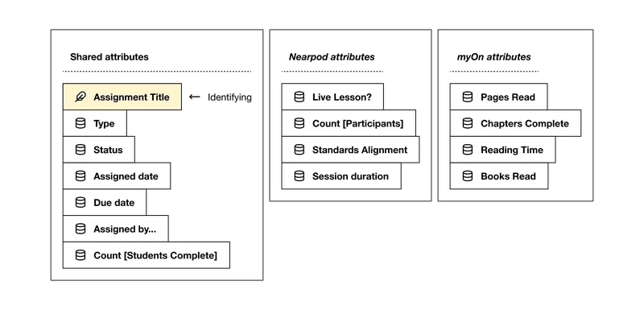

Renaissance / Classroom Assignment Management
Who needs my help today?
One page listed assignments from several learning products. Teachers still had to leave it to find the students who needed help.
I challenged that MVP and worked with product, research, and engineering to bring student progress into the assignment page.
Shipped in six weeks. Over the following 60 days, the team observed fewer exits to individual-product reports; the fuller performance summary remained outside the release.

- My contribution
- Product direction, interaction design, shared modeling, delivery
- Partners
- Product, UX research, engineering, and API owners
- Timeframe
- 4 weeks research & design
2 weeks development
The hub brought assignments together.
The teacher’s task was still split.
Renaissance’s assignment hub combined work from several learning products. Version 1 put it in one table with sorting, filtering, and completion counts. The team, me included, expected those controls to help teachers find what they needed.
A count such as “11/16” showed how many students had finished, but not who had finished or who had yet to start. Teachers had to open a report in the source product before deciding whom to help.
Assignments was the app’s most visited page and the one losing the most users to individual products. I argued that student visibility belonged in the core experience: the opportunity was to help teachers identify both the work and the students needing attention without leaving the hub.
Start with urgent work.
Open it to see who needs help.
I won support to test a different direction. Our UX research partners ran moderated sessions with five current users and five teachers new to the product suite, comparing Version 1 with two prototypes.
Teachers organized their work by urgency. I replaced the flat list with groups: new assignments, overdue, due soon, in progress, and done. Opening an assignment revealed its students, working status, and assignment-specific results, with students who had not started appearing first. Teachers’ feedback supported this direction.
Try the grouped view below: open an assignment to see its students, sort the table, or switch to Before to compare the original count-based layout.
Before
| Name | Type | Assigned | Status | Assigned by | Actions |
|---|---|---|---|---|---|
| Long Division Practice | Skills Practice | Feb 2, 2026 | Assigned0/16 | Me (Jane Doe) | |
| Fractions Practice | Skills Practice | Feb 20, 2026 | In progress11/16 | Me (Jane Doe) | |
| Multiplication Fluency | Skills Practice | Feb 15, 2026 | In progress9/25 | Fredrick Crane | |
| Algebra: Basic Quiz | Knowledge Check | Feb 25, 2026 | Complete25/25 | Me (Jane Doe) | |
| Place Value Review | Knowledge Check | Feb 9, 2026 | Complete25/25 | Kelly Green |
After
New assignments (1)
Skill Practice: Symmetry & TransformationsDue 9/27
| Benjamin Frost | Completed in 24m | 9 / 12 (75%) |
|---|---|---|
| Caleb Nguyen | Not started | Not available |
| Diego Fuentes | Not started | Not available |
| Elena Voss | In progress | 3 / 12 (25%) |
| Fatima Khan | In progress | 5 / 12 (42%) |
| Gabriel Ortiz | In progress | 7 / 12 (58%) |
| Harper Lee | In progress | 3 / 12 (25%) |
Overdue (2)
Reading Activity: The Long Winter, Chapter 4Due 9/17
| Diego Fuentes | In progress | 19 of 32 pages |
|---|---|---|
| Elena Voss | Completed in 17m | 29 of 32 pages |
| Fatima Khan | Completed in 20m | 31 of 32 pages |
| Gabriel Ortiz | Completed in 23m | 29 of 32 pages |
| Harper Lee | Not started | Not available |
| Isaac Moreno | Not started | Not available |
| Jasmine Kim | Not started | Not available |
Math Challenge: Area & PerimeterDue 9/19
| Fatima Khan | Completed in 16m | 7 / 10 (70%) |
|---|---|---|
| Gabriel Ortiz | Completed in 19m | 9 / 10 (90%) |
| Harper Lee | Not started | Not available |
| Isaac Moreno | Not started | Not available |
| Jasmine Kim | Not started | Not available |
| Aisha Patel | In progress | 3 / 10 (30%) |
| Amara Okafor | In progress | 4 / 10 (40%) |
Due soon (3)
Skill Practice: Equivalent FractionsDue 9/22
| Isaac Moreno | In progress | 5 / 12 (42%) |
|---|---|---|
| Jasmine Kim | In progress | 7 / 12 (58%) |
| Aisha Patel | In progress | 3 / 12 (25%) |
| Amara Okafor | Completed in 14m | 12 / 12 (100%) |
| Ava Coleman | Completed in 17m | 10 / 12 (83%) |
| Benjamin Frost | Completed in 20m | 12 / 12 (100%) |
| Caleb Nguyen | Not started | Not available |
Reading Activity: The One and Only Ivan, Chapter 6Due 9/23
| Jasmine Kim | In progress | 19 of 32 pages |
|---|---|---|
| Aisha Patel | Completed in 23m | 31 of 32 pages |
| Amara Okafor | Completed in 12m | 29 of 32 pages |
| Ava Coleman | Completed in 15m | 31 of 32 pages |
| Benjamin Frost | Completed in 18m | 29 of 32 pages |
| Caleb Nguyen | Not started | Not available |
| Diego Fuentes | In progress | 19 of 32 pages |
Math Challenge: Ratios & ProportionsDue 9/24
| Aisha Patel | In progress | 3 / 10 (30%) |
|---|---|---|
| Amara Okafor | In progress | 4 / 10 (40%) |
| Ava Coleman | Completed in 13m | 10 / 10 (100%) |
| Benjamin Frost | Completed in 16m | 8 / 10 (80%) |
| Caleb Nguyen | Not started | Not available |
| Diego Fuentes | Not started | Not available |
| Elena Voss | In progress | 3 / 10 (30%) |
In progress (5)
Skill Practice: Adding IntegersDue 9/15
| Benjamin Frost | In progress | 3 / 12 (25%) |
|---|---|---|
| Caleb Nguyen | In progress | 5 / 12 (42%) |
| Diego Fuentes | Completed in 18m | 9 / 12 (75%) |
| Elena Voss | Completed in 21m | 11 / 12 (92%) |
| Fatima Khan | Completed in 24m | 9 / 12 (75%) |
| Gabriel Ortiz | Completed in 13m | 11 / 12 (92%) |
| Harper Lee | Not started | Not available |
Math Challenge: Algebraic ExpressionsDue 9/16
| Caleb Nguyen | In progress | 4 / 10 (40%) |
|---|---|---|
| Diego Fuentes | Completed in 16m | 8 / 10 (80%) |
| Elena Voss | Completed in 19m | 10 / 10 (100%) |
| Fatima Khan | Completed in 22m | 8 / 10 (80%) |
| Gabriel Ortiz | Completed in 11m | 10 / 10 (100%) |
| Harper Lee | Not started | Not available |
| Isaac Moreno | In progress | 4 / 10 (40%) |
Skill Practice: Word RelationshipsDue 9/16
| Caleb Nguyen | In progress | 5 / 12 (42%) |
|---|---|---|
| Diego Fuentes | Completed in 16m | 10 / 12 (83%) |
| Elena Voss | Completed in 19m | 12 / 12 (100%) |
| Fatima Khan | Completed in 22m | 10 / 12 (83%) |
| Gabriel Ortiz | Completed in 11m | 12 / 12 (100%) |
| Harper Lee | Not started | Not available |
| Isaac Moreno | In progress | 5 / 12 (42%) |
Reading Activity: Bud, Not Buddy, Chapter 8Due 9/17
| Diego Fuentes | In progress | 19 of 32 pages |
|---|---|---|
| Elena Voss | Completed in 17m | 29 of 32 pages |
| Fatima Khan | Completed in 20m | 31 of 32 pages |
| Gabriel Ortiz | Completed in 23m | 29 of 32 pages |
| Harper Lee | Not started | Not available |
| Isaac Moreno | In progress | 14 of 32 pages |
| Jasmine Kim | In progress | 19 of 32 pages |
Math Challenge: Decimal OperationsDue 9/18
| Elena Voss | Completed in 15m | 8 / 10 (80%) |
|---|---|---|
| Fatima Khan | Completed in 18m | 10 / 10 (100%) |
| Gabriel Ortiz | Completed in 21m | 8 / 10 (80%) |
| Harper Lee | Not started | Not available |
| Isaac Moreno | In progress | 4 / 10 (40%) |
| Jasmine Kim | In progress | 6 / 10 (60%) |
| Aisha Patel | In progress | 3 / 10 (30%) |
Done (3)
Skill Practice: Vocabulary ReviewDue 9/16
| Caleb Nguyen | Completed in 13m | 12 / 12 (100%) |
|---|---|---|
| Diego Fuentes | Completed in 16m | 10 / 12 (83%) |
| Elena Voss | Completed in 19m | 12 / 12 (100%) |
| Fatima Khan | Completed in 22m | 10 / 12 (83%) |
| Gabriel Ortiz | Completed in 11m | 12 / 12 (100%) |
| Harper Lee | Completed in 14m | 10 / 12 (83%) |
| Isaac Moreno | Completed in 17m | 12 / 12 (100%) |
Math Challenge: VolumeDue 9/15
| Benjamin Frost | Completed in 12m | 7 / 10 (70%) |
|---|---|---|
| Caleb Nguyen | Completed in 15m | 9 / 10 (90%) |
| Diego Fuentes | Completed in 18m | 7 / 10 (70%) |
| Elena Voss | Completed in 21m | 9 / 10 (90%) |
| Fatima Khan | Completed in 24m | 7 / 10 (70%) |
| Gabriel Ortiz | Completed in 13m | 9 / 10 (90%) |
| Harper Lee | Completed in 16m | 7 / 10 (70%) |
Reading Activity: The Giver, Chapter 1Due 9/14
| Ava Coleman | In progress | 19 of 32 pages |
|---|---|---|
| Benjamin Frost | Completed in 14m | 32 of 32 pages |
| Caleb Nguyen | Completed in 17m | 30 of 32 pages |
| Diego Fuentes | Completed in 20m | 32 of 32 pages |
| Elena Voss | Completed in 23m | 30 of 32 pages |
| Fatima Khan | Completed in 12m | 32 of 32 pages |
| Gabriel Ortiz | Completed in 15m | 30 of 32 pages |
Student visibility needed
a shared model and new data.
The interface depended on more than grouping the list. The API returned completion counts, so I worked with engineering and API owners to add student IDs and support student-level detail.
I facilitated an object-modeling workshop with product and engineering to define shared assignment attributes while preserving product-specific outcomes, such as pages read or questions answered. That gave teachers one interaction across products that stored assignments differently.
Explore the shared assignment model

Title, type, assigned date, and due date were shared attributes. Product-specific detail included questions answered or pages read.
Keep the release focused on teacher attention
- Shipped
- Urgency groups and student tables with working status and assignment-specific outcomes.
- Deferred
- A fuller performance summary. The first release focused on identifying assignments and students needing attention.
I co-authored requirements with the product manager and carried the direction through interaction states, engineering sessions, and handoff. Within the React app and Angular shell, timeframe pre-filtering limited how much student-level data the API needed to load.
What changed
Fewer trips to reports.
More of the answer in one place.
Version 2 shipped after four weeks of research and design and two weeks of development. Over the following 60-day measurement period, we observed fewer exits from Assignments to individual product reports. The initiative met its hub-adoption goal; exact figures are confidential.
What I took forward
Completeness depended on whether teachers could answer their primary question. Consolidating products was a start. Making the next action clear made the hub useful.